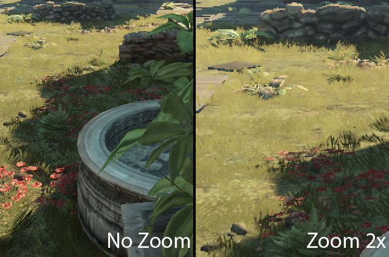
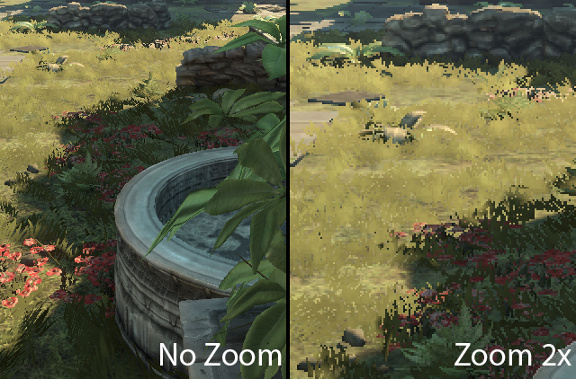
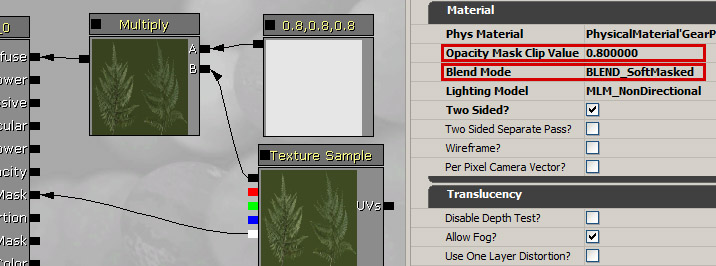
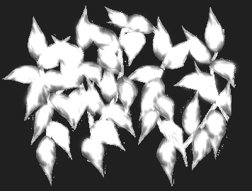
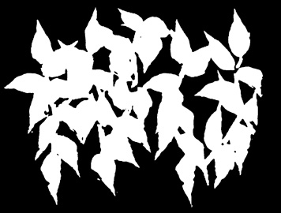

UDN
Search public documentation:
SoftMaskedCH
English Translation
日本語訳
한국어
Interested in the Unreal Engine?
Visit the Unreal Technology site.
Looking for jobs and company info?
Check out the Epic games site.
Questions about support via UDN?
Contact the UDN Staff
日本語訳
한국어
Interested in the Unreal Engine?
Visit the Unreal Technology site.
Looking for jobs and company info?
Check out the Epic games site.
Questions about support via UDN?
Contact the UDN Staff
软遮罩的混合模式
概述

注意：柔软的草和叶子在贴图定义边界的地方会自动进行抗锯齿显示。此外。环境遮挡显示效果会更逼真，由于远处的草地更不易于进行深度缓冲，因而具有更少的噪音 SSAO 人工因素。 下面是相同的内容使用经典的 Masked 材质混合模式的效果：
如何激活和调整

该方法可以通过在 Material Editor（材质编辑器）中将 Blend Mode（混合模式） 设置为 Blend_SoftMasked 激活。要想得到最佳结果，最好将 Opacity Mask Clip Value（不透明蒙板剪辑值） 变更为 0.7 的近似值（有效范围从 0.4 到 0.9）。更高的值可以使用更多的软过滤，但是它同时会减少使用经典的 Masked 方法渲染的量（为雾气深度和景深使用正确的像素）。精华内容
 放大左侧叶子的贴图，而没有放大右侧贴图。在这里使用一个完好的黑白蒙板进行贴图处理。最终可以在边界上得到最佳抗锯齿效果（该图片没有出现显示问题）。
即使没有放大，如果用灰度标内容使贴图内容的区域更大，那么边界还是可以变大。这通常可以避免。遮罩的内容无论怎样最终结果都是二进制蒙板，所以可以在不会对结果造成很多影响的前提下更换该内容以避免过滤区域变大。（与遮罩的内容进行比较）。可以在 Photoshop 中完成该放大过程。我们以下面一个有问题的贴图蒙板为例：
放大左侧叶子的贴图，而没有放大右侧贴图。在这里使用一个完好的黑白蒙板进行贴图处理。最终可以在边界上得到最佳抗锯齿效果（该图片没有出现显示问题）。
即使没有放大，如果用灰度标内容使贴图内容的区域更大，那么边界还是可以变大。这通常可以避免。遮罩的内容无论怎样最终结果都是二进制蒙板，所以可以在不会对结果造成很多影响的前提下更换该内容以避免过滤区域变大。（与遮罩的内容进行比较）。可以在 Photoshop 中完成该放大过程。我们以下面一个有问题的贴图蒙板为例：

在 Masked 中，除阀值外所有亮度都不透明时，该贴图可能没有问题。在 SoftMasked 中，灰色部分会透过部分光，而某些可能由于错误排序和雾气而无法照射。内容的背景甚至不是黑色，这说明所有三角形应该都是部分遮挡，即使是它们本不应该遮挡的区域。完好的遮罩效果如图所示（在这里最小化灰色区域，而尽可能获得最佳效果）： 要快速修补贴图，可以在 Photoshop 中执行以下几个步骤：
要快速修补贴图，可以在 Photoshop 中执行以下几个步骤：
- 请确保蒙板可见（RGB 或 alpha 通道）
- 将“图片尺寸”变更为 400%（水平和垂直）。. 请确保将 Resample image（重新采样图片） 设置为 bilinear（双线性） 。
- 可选择对该图片进行一些模糊处理（例如，Gaussian 模糊 2.5 像素）
- 应用 Adjustments（调整） Threshold（阀值） ，根据内容进行调整（在 Masked 中，用 Opacity Clip Mask（不透明剪辑蒙板） 值进行调整。）
- 将“图片尺寸”变更为 25%（水平和垂直）。请确保将 Resample image（重新采样图片） 设置为 bilinear（双线性） 。

性能
GPU
需要很小的额外像素着色器指令。几何体需要渲染两次（!EarlyZ 和 Base（基本）通过，可能是阴影贴图）。与帧缓冲同时混合操作应该在 Xbox360 上忽略，但是使用短着色器时在其他硬件上比较明显。对于基本通过，需要按照从后到前的顺序渲染对象。CPU
必需的排序会给 CPU 渲染消耗增添其他开销（排序功能，更多状态变更）。这与视图相关，而在多个不同材质需要进行交错渲染时情况会更糟糕。限制
- 当前执行是评估可否在 Xbox360 上使用它的早期阶段。进一步改进可以解决其中某些限制，但是其他消耗可能导致性能明显下降。Xbox360 可以像 PC 预览一样有效，并可以作为下一个改进。
- 当前执行只可以在 Xbox360 上正常工作，而这只针对于环境光照和一个主要光源（太阳）！
- 在 PC 上，它只作用于环境光照。覆盖受主要光源影响的软遮罩边界会看起来太亮。这在草地上非常显而易见，而在少数遮挡对象上就没有那么明显。
- 现在认为它不支持 Playstation 3 和着色器模型 4。
- SoftMasked 渲染不支持环境和一个方向型光源以外的光源
（所有 SoftMasked 对象需要在单独通过中进行渲染，否则边界看着太亮，就像在 PC 上看到的一样）。 - 阴影只在 XBox360 上受支持，而只来源于单个主要光源。
- 雾气
SoftMasked 只在最大不透明区域中，只会影响深度缓冲。由于雾气渲染基于深度缓冲，致使有些像素跑光过度。将 Opacity Mask Clip（不透明蒙板剪辑） 值调整得更小会有帮助，但是那样的话结果会不够软。可以在以下图片中发现这个问题（第一个图片是 *SoftMasked*，第二个图片是 *Masked*）。